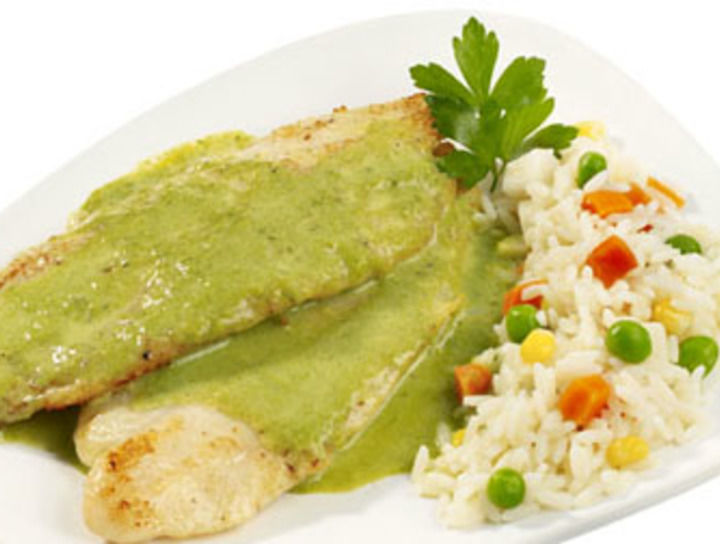

Pescado al cilantro
Ingredientes
- 2 colas de rape
- 1 manojo de cilantro
- 1 vaso de leche evaporada
- 10 cucharadas soperas de vinagre de manzana
- 5 cucharadas soperas de agua
- 3 pellizcos de sal y pimienta
- 1 taza de harina de garbanzos
- 4 dientes de ajo
- 2 vasos de aceite de girasol o semillas
- 1 cucharada sopera de harina de maíz
Preparación
- 1. Prepara dos colas de rape sin piel. Mientras tanto, para acelerar el tiempo de preparación, pon a calentar en una sartén honda aceite para freír. De este modo, el aceite ya estará a la temperatura adecuada cuando toque utilizarlo.
- 2. Por otro lado, pon harina en una bolsa e introduce el pescado añadiendo sal y pimienta. Cierra la bolsa y remueve con suavidad hasta que el rape esté bien cubierto de harina. Si, por el contrario, ves que no queda bien empapado de harina, añade más hasta que su aspecto se vea suelto y uniforme.
- 3. Fríe el pescado en el aceite bien caliente. Evita removerlo hasta que no veas que las esquinas del pescado toman un color dorado, este será el indicativo que te mostrará que es el momento de voltearlo. Cuando esté listo, prepara papel absorbente de cocina en una fuente y coloca el pescado frito encima para retirar el exceso de aceite.
- 4. Pela y corta en láminas los dientes de ajo y fríelos con un buen chorro del mismo aceite que has usado para freír el rape. Remueve para que se tuesten por ambas partes sin que lleguen a quemarse, pero que su textura sea lo mas crujiente posible. Retira del fuego y saca las láminas de ajo frito.
- 5. Ha llegado el momento de hacer la salsa con cilantro para pescado. En la misma sartén que retiraste del fuego, vierte vinagre con agua mezclada, remueve y caliéntala de nuevo. No dejes que hierba el agua, solo que tome un poco de calor.
- 6. Vierte lentamente y removiendo la leche evaporada, teniendo presente que no debes dejarla hervir. Añade un punto de sal para que no resulte una salsa sosa.
- 7. Trocea o corta el ramillete de cilantro fresco. Si ves que los tallos son muy gruesos y duros puedes quitarlos, pero solo parte de ellos. Introduce el cilantro en la sartén con el resto de ingredientes y cocina la salsa durante cuatro minutos, removiendo despacio. Pasado este tiempo, espesa la salsa añadiendo harina de maíz diluida en un chorrito de agua a temperatura ambiente.
- 8. Deja que la salsa se entibie y llévala a la batidora con parte de los dientes de ajo que tenías apartados. Solo utiliza la mitad de las láminas de ajo frito, el resto resérvalo.
- 9. Ya tienes tu salsa de cilantro lista. Es tan deliciosa que no podrás resistirte. Solo tienes que verterla sobre el pescado frito y añadir las láminas de ajo por encima. Saborea este espectacular bocado notando el crujiente del pescado junto con las láminas de ajo que lo acompañan dando paso a ese sabor inconfundible del cilantro. Este filete de pescado al cilantro es simplemente espectacular, y dado que su elaboración es tan sencilla, puedes hacerlo cuando quieras.